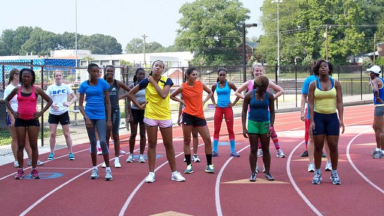
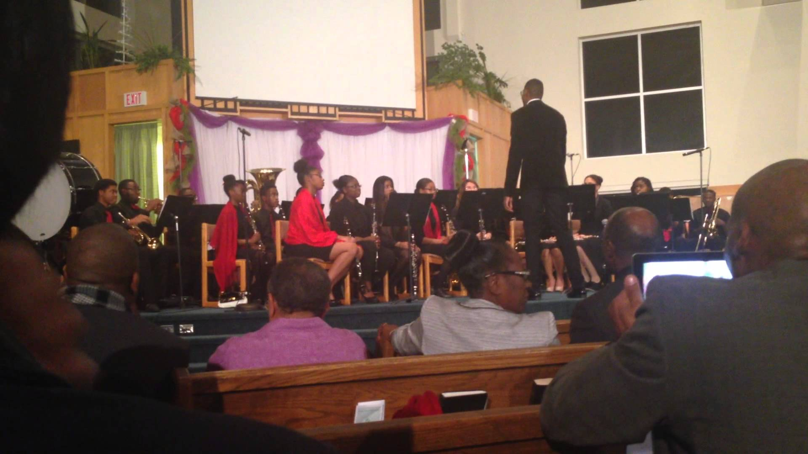

On Your Mark, Get Set, Go!
January 23, 2017 | Sydney Williams, Vice Principal
Our Sports Term is finally here! At this time of the year, all of our best athletes are
expected to be preparing themselves to support their respective houses.
For those who are having a hard time, here are a few tips that you can try to
follow...

Our Annual Christmas Concert
January 10, 2017 | Eliza Lake, Principal
Once again, our annual Christmas Concert was a huge success! Our staff would
like to extend a special thanks to Mrs. Richardson as well as all the students
who helped to make the concert a success!
Thanks to their continuous efforts, the attendance
was at its highest in years...

Still unsure about a career path that suits you? Here's some information on some
of the most popular and well-paying jobs that you can get
October 25, 2016 | Eliza Lake, Principal
Are you at a point in your life where you're not sure about what you want to do
with your life? Whether you're entering or leaving high school, this can be a
pretty rough and time-consuming decision.
Don't worry. Not everyone knows what they want to do by the time...
Are you an introvert? Here's why you should be speaking up in class
October 5, 2016 | Shenelle Wilkins, Guidance Counselor
Being quiet in class isn't necessarily a bad thing. At least you stay out of trouble,
right? But there will be times when speaking up in class will actually be to your
benefit.
You could be missing out a lot if you choose to keep quiet all the time...
5 tips on how to kick-start the new school year
September 20, 2016 | Jelanie Dyer, Former Student
The school year has started once again. For many, this can be a very difficult
time for many students who, once again, have to readjust to school life.
The Summer vacation is very long and students often return to school feeling very
disoriented and unorganised for the...
OUR RECENT POSTS